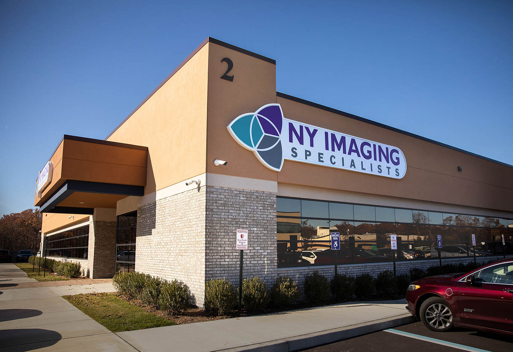
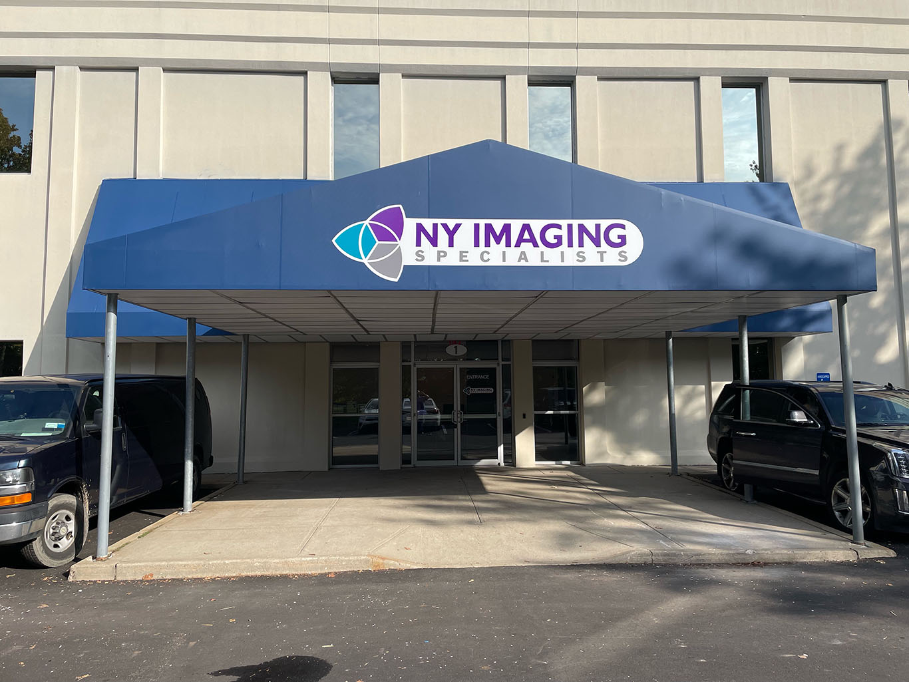

Our Locations
Convenient imaging centers across the New York metropolitan area.

NY Imaging Port Jefferson
1500 Route 112, Bldg 2A, Port Jefferson Station, NY 11776
(833) 269-4624
Mon-Sat: 7am-7pm, Select Sundays
PET/CT
MRI
CT
Ultrasound

NY Imaging Washington Heights
500 W 181st Street, 11th Floor, New York, NY 10033
(833) 269-4624
Mon-Fri: 8am-5pm
PET/CT
MRI
CT
Mammography
Ultrasound
X-Ray

NY Imaging Lake Success
1 Delaware Drive, Lake Success, NY 11042
(833) 269-4624
Mon-Fri: 7am-7pm, Sat: 8am-4pm
PET/CT
MRI
CT
Interventional Radiology
Mammography
Ultrasound
X-Ray